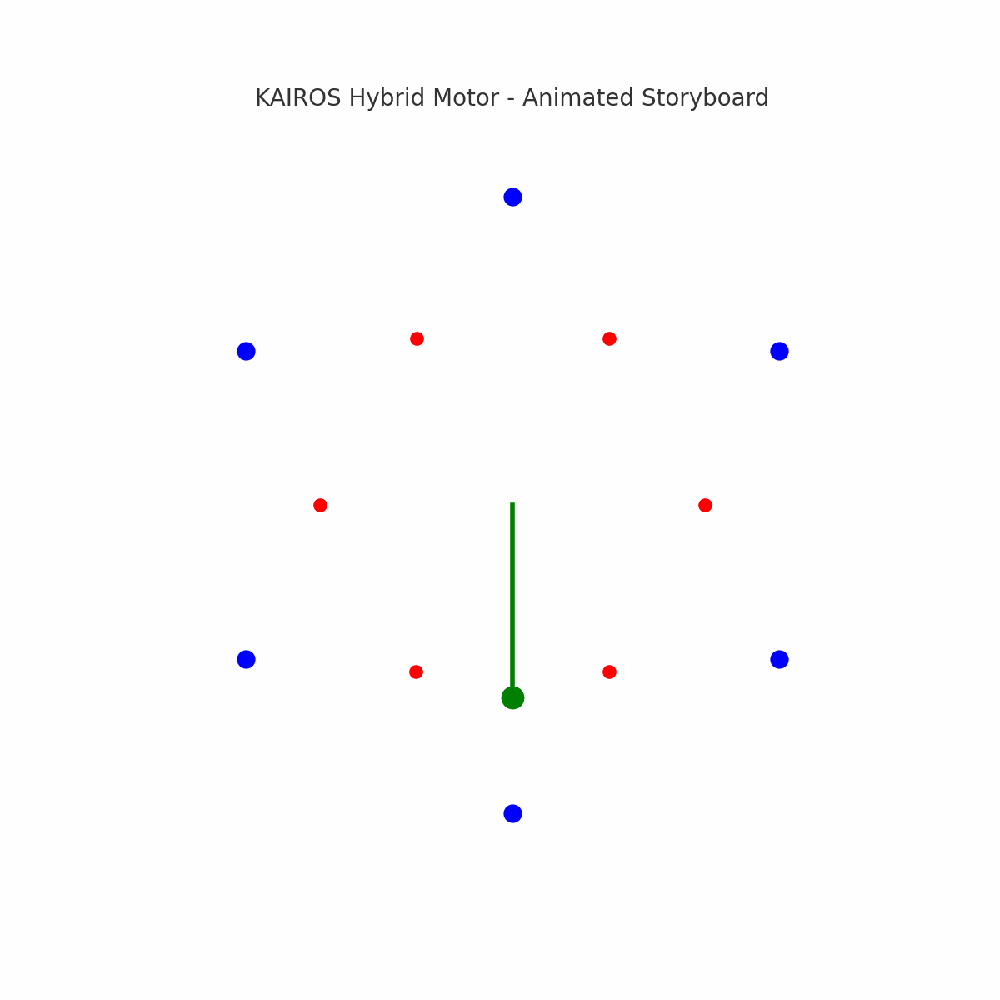

KAIROS is a gravity-assisted magnetic rotor system designed for sustainable, off-grid, low-energy applications.
This project exists to help communities build energy solutions with what they have — no grid, no oil, no rare tools. Just motion, balance, and intelligent design.
Open-source. Hackable. Humanitarian.